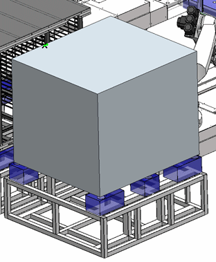
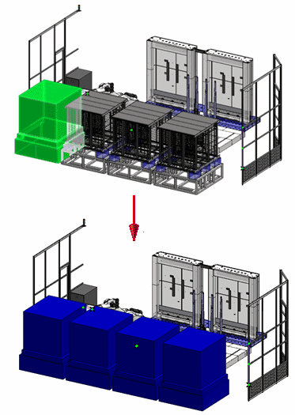

Create Simplified Assembly using the Model command
Creates a simplified representation of an assembly creating a solid representation of the simplified assembly. The solid model is stored as ordered solid geometry within the assembly.

Creating the solid representation of the simplified assembly
The Enclosure command can be used to create an initial solid body around the selected assembly components to be included in the simplified assembly. The Enclosure command will encompass the selected geometry by a block, and interior cylinder or and external cylinder. Ordered assembly features such as cutouts, and rounds can be used to better refine the solid body that represents the simplified assembly.
The solid representation of the assembly is associative. If the designed part geometry is modified, the resultant solid body can be recomputed with the Update All Links command.

Duplicating bodies
The Duplicate Body command can be used to create multiple instances of simplified assembly geometry representations.

How do I
Edit an Auto-Simplify definitionCreate a single body using Auto-Simplify
Use the simplified version of a part in an assembly
Use the designed version of a part in an assembly
Create a simplified version of an assembly
Save a simplified assembly as a part
Controlling simplified assemblies
Learn more
Simplifying partsSimplifying assemblies
Simplified assemblies best practices
Look up more details
Auto-Simplify commandAuto-Simplify command bar
Create Simplified Assembly using the Visible Faces command
Enclosure command
Duplicate Body command
Simplify Assembly command
Save Simplified As command
Use Simplified Parts command
Use Simplified Assemblies command
Simplify Model command
Update Simplified Assembly command
Save Simplified Assembly As dialog box
Simplified Assembly Visible Faces Options dialog box
Design Assembly command
Use Designed Assembly command
Use Designed Part command
Design Model command
Create Simplified Assembly Visible Faces command bar
Create Simplified Assembly Model command bar